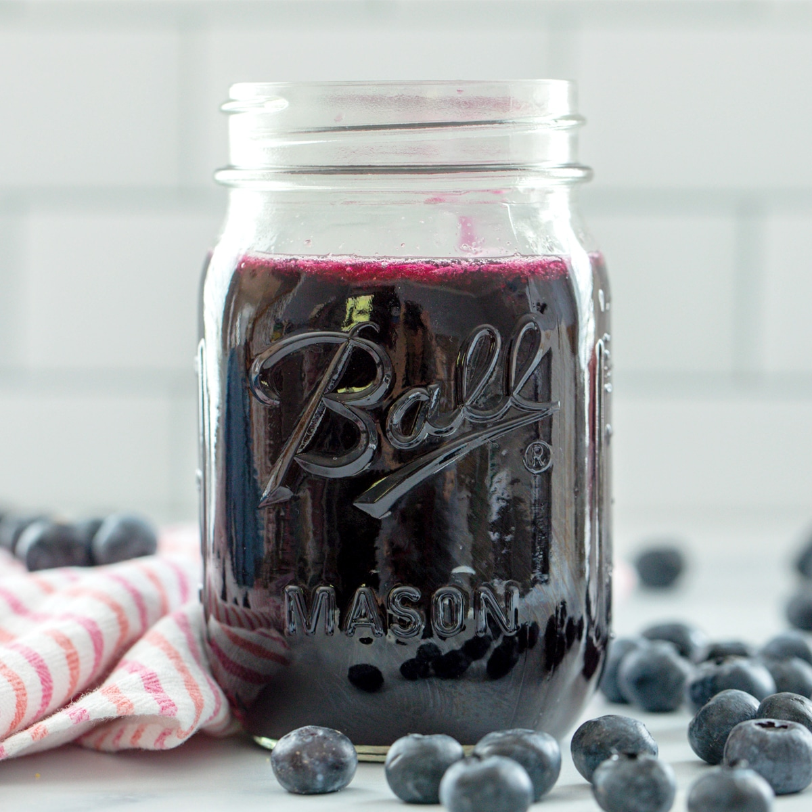

Blueberry Simple Syrup

Description
Winter always has me missing the sunshine, so I opt to make lemonade to remind me of the hot summer afternoons.
What's a good lemonade without a fresh fruit syrup to go with it? After making fresh lemonade for the millionth time,
I knew I needed an extra punch to change it up. This blueberry simple syrup was just the right addition!
Estimated Cooking Time: 15 minutes
Ingredients
- Blueberries (2 cups)
- Sugar (1 cup)
- Water (1 cup)
- Lemon juice (1 teaspoon)
Steps
- In a medium pot, bring blueberries, water, sugar, and lemon juice to a light simmer
- While the mixture is warming up, mash blueberries with a wooden spoon or masher
- Let the mixture simmer for 8 to 10 minutes, stirring occasionally, then remove from heat
- After the syrup has cooled to a handling temperature, pur it through a sieve into a sealable glass container
- Store this syrup in the fridge for up to two weeks